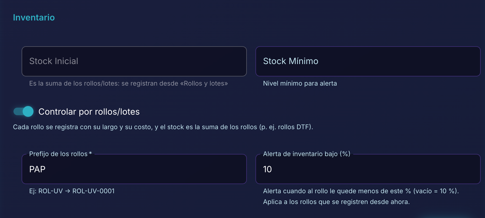
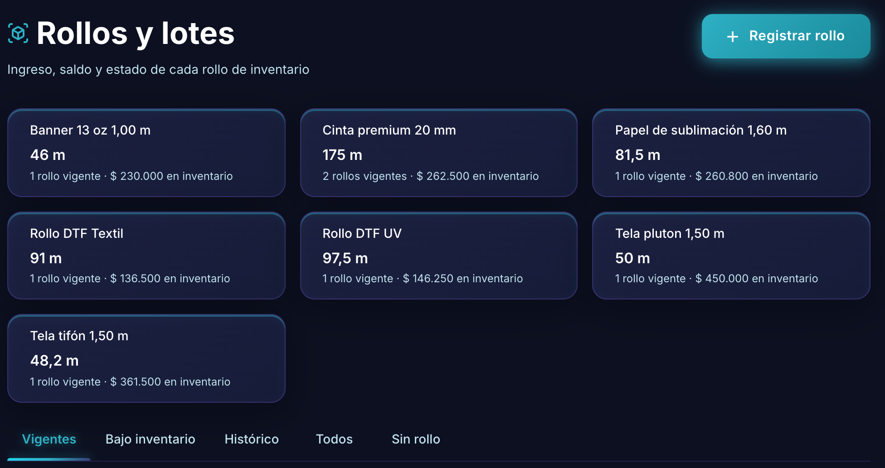
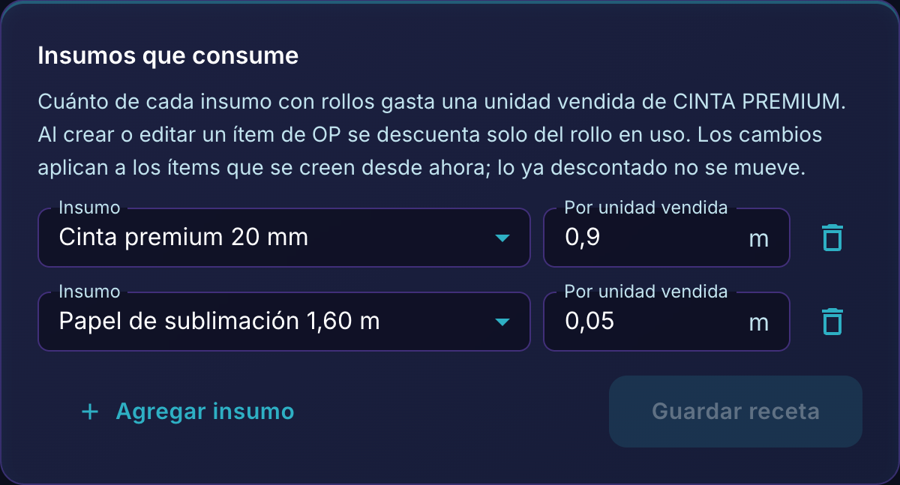
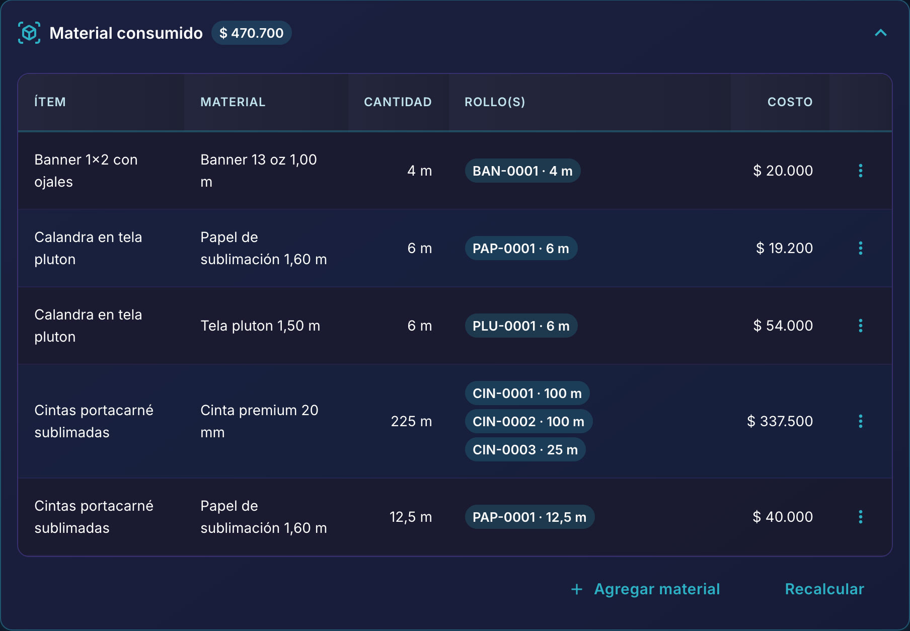
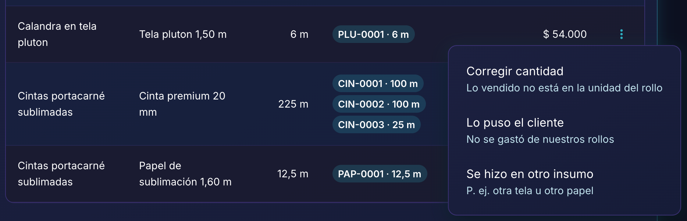
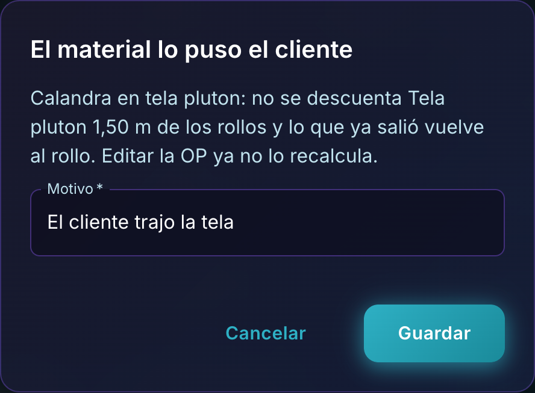
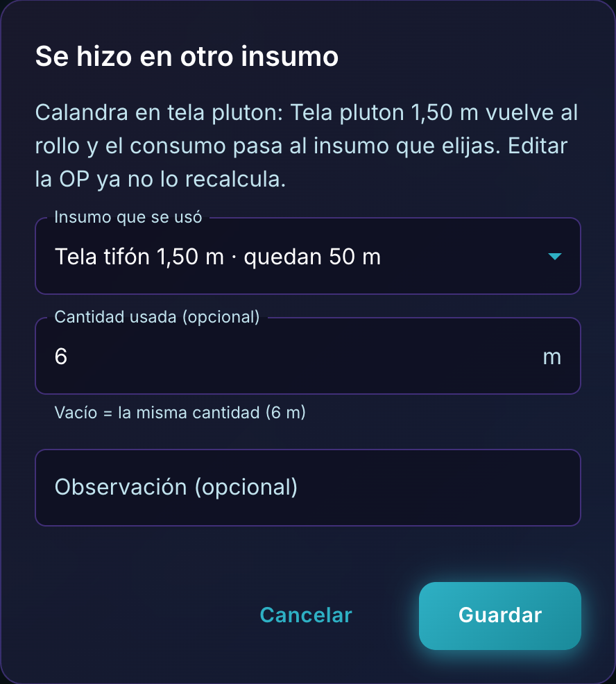
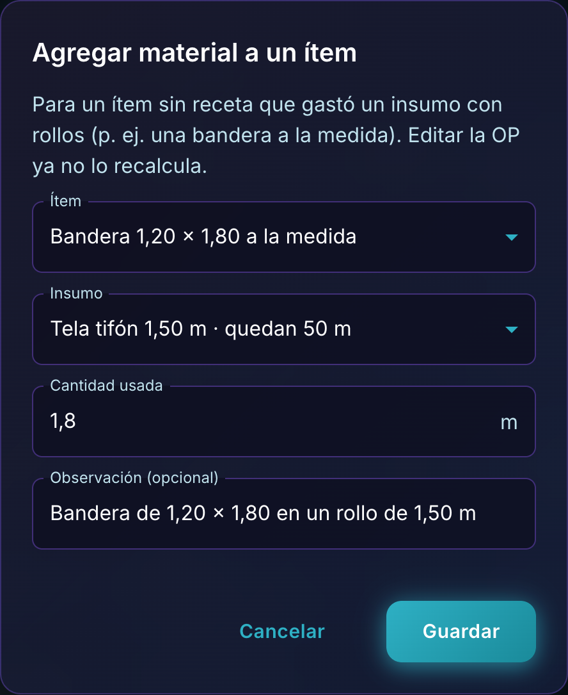
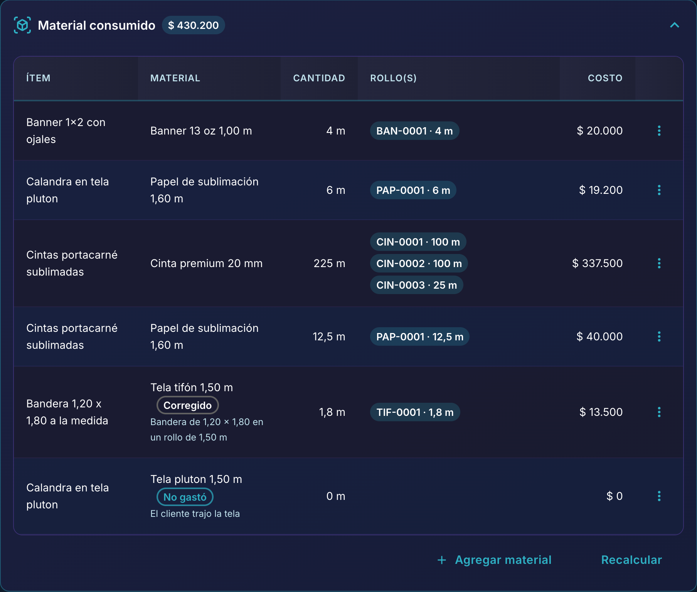

Cómo decirle al CRM cuánto material gasta cada producto, para que cada OP descuente sola el papel, la tela, la cinta o el banner de sus rollos, y cómo corregirlo cuando el trabajo fue distinto.
Para quién
Gerencia, producción y asesores comerciales.
Qué cambia
Cualquier producto con receta descuenta solo de sus rollos, como ya pasa con el DTF.
Antes de empezar
Crear los insumos, registrar los rollos de bodega y cargar las recetas.
Versión 1.0 · Noviembre de 2026 · Complementa el manual «Rollos DTF y consumo de material»
Contenido
1Qué hace esta función
2Antes de empezar
3Crear un insumo con rollos
4Registrar los rollos
5Cargar la receta de un producto
6Cómo se descuenta en la OP
7Corregir: lo puso el cliente
8Se hizo en otro insumo
9Agregar material a un ítem
10Cambiar o quitar una receta
11Preguntas frecuentes
1Qué hace esta función
Una receta dice cuánto material gasta una unidad vendida de un producto. Por ejemplo: una cinta portacarné gasta 0,90 m de cinta y un poco de papel de sublimación.
Con la receta cargada, cada vez que se vende ese producto en una OP, el CRM descuenta solo el material de los rollos, igual que con el DTF. Así cada OP carga con lo que de verdad gastó, y no con un rollo entero.
CargarLa receta del producto, una sola vez.
VenderLa OP descuenta sola cada insumo de su rollo.
CorregirSi el cliente trajo el material o se usó otro.
Ejemplo de la vida real: se venden 250 cintas a un cliente, 30 a otro y 10 a otro, con 4 rollos de 100 m comprados. Cada cinta gasta 0,90 m, así que las OP se llevan 225 m, 27 m y 9 m. En los rollos quedan 139 m para las siguientes ventas. Ya no hace falta cargar un rollo entero a cada orden.
2Antes de empezar
Hay que hacer tres cosas, en este orden, todas desde el menú Logística:
1
Crear los insumos con rollos (sección 3): papel de sublimación, cada tela, cinta, vinilo, banner…
2
Registrar los rollos que hay hoy en bodega, con su largo real (sección 4).
3
Cargar la receta de cada producto que se vende (sección 5).
Permiso
Qué permite
Crear Insumos / Actualizar Insumos
Crear los insumos y marcarlos para controlarlos por rollos.
Registrar Rollos y Lotes
Registrar los rollos que llegan.
Actualizar Productos + Ver Rollos y Lotes
Cargar y cambiar las recetas.
Corregir Consumo de Material en OP
Las correcciones de las secciones 7, 8 y 9.
3Crear un insumo con rollos
Cada material que se compra en rollo se crea una vez como insumo.
1
Entra a Logística → Insumos y crea un insumo nuevo, por ejemplo Papel de sublimación 1,60 m.
2
En Unidad de Compra y Unidad de Consumo elige metro (m).
3
En la parte de Inventario, activa Controlar por rollos/lotes.
4
Escribe el Prefijo de los rollos, por ejemplo PAP: los rollos quedarán como PAP-0001, PAP-0002… Si quieres, cambia la Alerta de inventario bajo (vacío = 10 %).
5
Guarda el insumo.

Insumo controlado por rollos, con prefijo PAP y alerta al 10 %.
Crea un insumo por cada material y ancho distintos. Por ejemplo, «Papel de sublimación 1,60 m» y «Papel de sublimación 1,10 m» por separado, y una tela por cada referencia. La receta y el rollo en uso van por insumo: si dos anchos comparten insumo, el CRM no sabe de cuál descontar.
Importante: el control por rollos solo se puede activar en un insumo sin stock. Con rollos, el stock deja de escribirse a mano: es la suma de sus rollos.
4Registrar los rollos
Se hace igual que con el DTF: en Logística → Rollos y lotes, botón Registrar rollo. Eliges el insumo, escribes el largo, la fecha y el costo (por metro o el valor total) y, si lo compraste con una OG, la amarras. El paso a paso está en la sección 3 del manual «Rollos DTF y consumo de material».
Cada insumo con rollos aparece como una tarjeta con sus metros disponibles y lo que vale ese inventario:

Una tarjeta por insumo: banner, cinta, papel, telas y los rollos DTF.
Primero los rollos de bodega. Si se vende un producto con receta y su insumo no tiene rollos registrados, la venta no se frena, pero el material queda sin rollo y sin costo hasta que se registre y se asigne (sección 8 del manual de DTF).
El rollo en uso, por insumo. Cada insumo tiene su propio rollo en uso: puede estar montado un rollo de papel, uno de tela y uno de cinta al mismo tiempo. Cuando uno se acaba, el CRM monta solo el siguiente del mismo insumo.
5Cargar la receta de un producto
La receta se carga en el mismo formulario del producto.
1
Entra a Logística → Productos y edita el producto, por ejemplo CINTA PREMIUM.
2
Debajo del formulario está la tarjeta Insumos que consume. Haz clic en Agregar insumo.
3
Elige el insumo y escribe cuánto gasta una unidad vendida, en la unidad del insumo (metros).
4
Repite para cada insumo y haz clic en Guardar receta.

Cada cinta gasta 0,90 m de cinta y 0,05 m de papel.
Ejemplos
Producto
Se vende por
Receta (por unidad vendida)
CINTA PREMIUM
Unidad
0,90 m de cinta + el papel de una cinta
CALANDRA
Metro
1 m de papel de sublimación + 1 m de tela
Banner 1x2 metros
Unidad
2 m de banner de 1,00 m de ancho
DTF UV
Metro
1 m de rollo DTF UV (ya viene cargada)
Las cantidades de esta tabla son ejemplos. Pon las de tu taller: cuánto papel gasta de verdad una cinta, o cuánto banner un 1x2 según el ancho del rollo. Si la cuenta no es exacta, se puede corregir en cada OP (sección 7).
La tarjeta aparece al editar el producto, no al crearlo: primero crea el producto y luego entra a editarlo. El botón Guardar receta es aparte del botón Actualizar del producto.
6Cómo se descuenta en la OP
No hay que hacer nada distinto al vender. Cuando una OP tiene un ítem con un producto que tiene receta, el CRM multiplica la cantidad del ítem por la receta y lo descuenta de los rollos. En el detalle de la OP, el panel Material consumido muestra cada insumo, de qué rollo salió y cuánto costó.

Una OP con cintas, calandra y banner: cada ítem descuenta cada insumo de su receta.
250 cintas
250 × 0,90 = 225 m de cinta. Como un rollo tiene 100 m, salieron de tres rollos: 100 + 100 + 25. Además, 12,5 m de papel.
6 m de calandra
6 m de papel y 6 m de tela pluton.
2 banners 1x2
2 × 2 = 4 m de banner.
Todo lo que ya conoces del DTF aplica igual: si se edita la cantidad se mueve solo la diferencia; si se quita el ítem o se anula la OP, el material vuelve al rollo; y si se devuelve el dinero al cliente, el material no vuelve.
7Corregir: lo puso el cliente
La receta dice lo normal, pero no siempre pasa lo normal. Cada línea del panel Material consumido tiene un menú (⋮) con estas opciones:

El menú de la línea de tela de la calandra.
Corregir cantidad
Se gastó más o menos de lo que dice la receta. Escribes lo real.
Lo puso el cliente
No se gastó de nuestros rollos: el cliente trajo la tela, el papel ya impreso, etc.
Se hizo en otro insumo
Se usó otra tela u otro papel (sección 8).
Volver a automático
Borra la corrección y vuelve a calcular con la receta. Solo aparece cuando la línea ya tiene una corrección.
Lo puso el cliente
1
En la línea del insumo, abre el menú y elige Lo puso el cliente.
2
Escribe el motivo (es obligatorio), por ejemplo «El cliente trajo la tela».
3
Haz clic en Guardar. Lo que se había descontado vuelve al rollo y la línea queda en 0 m con la marca No gastó.

Solo se marca la tela: el papel sí se gastó.
Una corrección se respeta siempre. Si después alguien edita la OP o cambia la cantidad, esa línea no se recalcula. Para que vuelva a la receta, usa Volver a automático.
8Se hizo en otro insumo
La receta tiene un insumo por defecto. Si el trabajo se hizo en otro (por ejemplo, la calandra se hizo en tela tifón y no en pluton), no hay que tocar la receta, solo esa OP.
1
En la línea del insumo de la receta, abre el menú y elige Se hizo en otro insumo.
2
Elige el insumo que se usó. Solo aparecen insumos con rollos de la misma unidad, con lo que les queda.
3
La cantidad es opcional: vacía, se pasa la misma.
4
Haz clic en Guardar. El insumo de la receta vuelve a su rollo y queda en 0 m; el nuevo se descuenta de los suyos.

La calandra se hizo en tela tifón.
9Agregar material a un ítem
Algunos ítems no tienen receta porque cada trabajo es distinto, como una bandera a la medida. Si gastaron material de un rollo, regístralo a mano.
1
En el panel Material consumido, haz clic en Agregar material.
2
Elige el ítem, el insumo y la cantidad usada. La observación es opcional pero ayuda.
3
Haz clic en Guardar. La línea queda marcada como Corregido.
Una bandera de 1,20 × 1,80 m cabe a lo ancho de un rollo de 1,50 m, así que gasta 1,80 m de largo.

1,8 m de tela tifón para la bandera.
Así queda el panel después de las correcciones: la tela de la calandra en 0 m porque la puso el cliente, y la bandera con su tela registrada a mano. El costo de material de la OP bajó de $ 470.700 a $ 430.200.

Las marcas No gastó y Corregido llevan debajo el motivo.
10Cambiar o quitar una receta
Las recetas se pueden cambiar cuando quieras desde el mismo formulario del producto. Para no mover lo que ya pasó, el CRM sigue estas reglas:
Receta nueva
Solo descuenta en los ítems que se creen desde ese momento. Las OP viejas no se tocan, aunque alguien las edite.
Cambiar una cantidad
Vale para los ítems nuevos. Lo ya descontado queda con la cantidad con que se hizo.
Quitar un insumo
Deja de descontarse en lo nuevo, pero no devuelve lo que ya gastaron las OP.
Cambiar el producto de un ítem
Se devuelve el material de la receta anterior y se aplica la del producto nuevo.
¿Una receta tenía un error? Corrígela en el producto para lo que viene. Las OP que ya se hicieron con el error se arreglan una por una con Corregir cantidad.
11Preguntas frecuentes
¿Qué productos descuentan de los rollos?
Los que tienen receta. Un producto sin receta no descuenta nada solo, pero se le puede agregar material a mano (sección 9).
Cargué la receta hoy. ¿Las OP de ayer descuentan?
No. La receta empieza a contar con los ítems que se creen después de cargarla. Si una OP vieja necesita su material, agrégalo a mano.
¿Y los trabajos a la medida, como un vinilo de 2 × 1 o un banner de cualquier tamaño?
Por ahora se registran con Agregar material o Corregir cantidad, escribiendo los metros que se gastaron. Que el CRM los calcule solo es la siguiente etapa.
Vendí un producto con receta y el panel dice «Pendiente».
Ese insumo no tenía rollos con saldo. Registra el rollo y asigna la venta desde la pestaña Sin rollo de Rollos y lotes.
¿Puedo poner en la receta tinta, ojales u otros insumos?
Solo insumos que se controlan por rollos. Los demás insumos no entran en las recetas por ahora.
¿Qué pasa si anulo la OP?
Todo el material vuelve a sus rollos, también lo corregido a mano. Si el rollo ya se cerró, se suma a su merma.
¿Quién puede cargar recetas y corregir?
Las recetas, quien tenga Actualizar Productos y Ver Rollos y Lotes. Las correcciones en la OP, quien tenga Corregir Consumo de Material en OP.